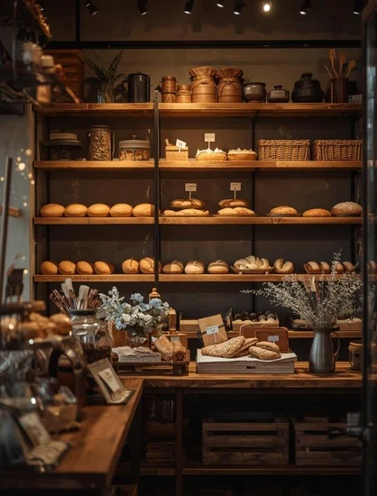
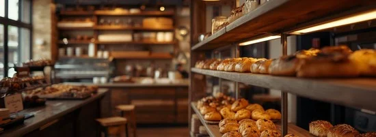

The Cozy Crumb was founded on a simple belief: that the best bread is baked with time, love, and the highest quality ingredients. What started as a small, local bakery with a focus on sourdough has grown into a community staple, but our commitment to artisanal methods remains unchanged.

What Makes Us Special?
We pride ourselves on our slow-fermentation process, which develops deep, complex flavors you won't find in mass-produced baked goods. Every loaf, pastry, and cake is handcrafted daily by our dedicated team of bakers. We source locally whenever possible, supporting our community and ensuring peak freshness.

Why Choose Us
**Quality Ingredients:** Only the finest organic flours and real butter.
**Artisanal Process:** Slow-fermentation, hand-kneaded dough, and stone-oven baking.
**Community Focus:** Locally owned and operated since 2010.
**Freshness Guarantee:** Everything is baked daily, guaranteed fresh.